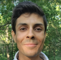

Tsvetan Yordanov
About
I am an experienced software engineer and a PhD student at Amsterdam UMC. My areas of expertise include machine learning, natural language processing, federated learning, and data science. I am passionate about using my curiosity and knowledge to help bring foth improvements to our everyday lives, one step at a time.
Skills
- Deep learning, recommender systems, autoencoders
- Machine learning, (non)parametric modeling
- NLP, transformers, LLMs
- Python, PyTorch, TensorFlow, Django
- R, dplyr, statsistical analysis, ggplot2
- Apache Spark, distributed systems, Kafka
- Java, Database Management Systems, Spring
- Containerization, Docker, Kubernetes
- Infrastructure and build tooling, Puppet, Vagrant, Maven, Gradle
- Cloud computing, AWS, Azure, CloudFoundry
- Continous integration, Jenkins, Gitlab
- Agile, 6SIGMA, XP, Waterfall
For a copy of my resume, please click the following link
Links
For direct contact, please send me a message through LinkedIn.